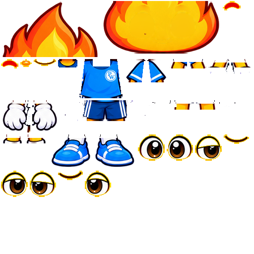

SPARKY / CHARACTER UPGRADE / STAGE 02The original sports character.
Assembled from separate parts.
Neutral appearance review: source flame and facial features, blue sports shirt and badge, striped shorts, white gloves and socks, and blue trainers.
Separate candidate · game character unchanged
01 · Light, dark and registered overlay
The assembled layers use one original coordinate system. No part is stretched, independently resized or fitted to the old Lucas silhouette.
Dark background
Light background
Aligned with original source
AssemblyTarget
Same source registration and crop. Reveal the target without colour blending.
02 · Face, cuffs and footwear close-ups
Enlarged native source pixels for inspection. These previews do not imply a higher-resolution redraw.
Flame, eyes and gentle smile
Independent brows, eyes, nose and smile. Clean paint remains behind the moving features.
Shirt, sleeves and glove cuffs
Original badge, sleeve stripes, open glove shapes and source-painted hidden overlaps.
Shorts, socks and trainers
Original clothing contours, side stripes and chunky blue shoes. No outer blur added.
03 · Parts and hidden overlaps
Inspect the layer construction
A static inspection control. The assembled position uses original anchors; moving the slider exposes the separate images.
Transparent atlas · 31 regions

Five source-painted overlap rows are retained under limb joins. They extend beneath the covering sleeve, cuff, shorts or sock; the outer silhouette is unchanged.
This stage establishes the neutral assembly. Elbow, knee and wrist coverage through motion still needs the stage 3 bend tests.
04 · Verified source comparison
236 × 403Native visible pixels
31 / 31Packed regions verified
UnchangedExterior alpha contour
≤ 3 / 255Maximum channel difference
Reading validation…
The target is the original source-sheet pose, not a generated approximation. Small interior differences result from overlapping slightly translucent source layers. This is a pixel check of the neutral pose, not an overall animation similarity percentage.
05 · Individual transparent PNGs
All parts retain source coordinates and native dimensions in the manifest. Six alternate eye images are carried forward for later facial-motion work.
Ready for joint fitting
The appearance package is prepared. The current game rig, voice system and animation library remain preserved. Next: fit the new artwork to useful existing controls, rebuild necessary meshes and weights, and validate bends before adapting the animation library.